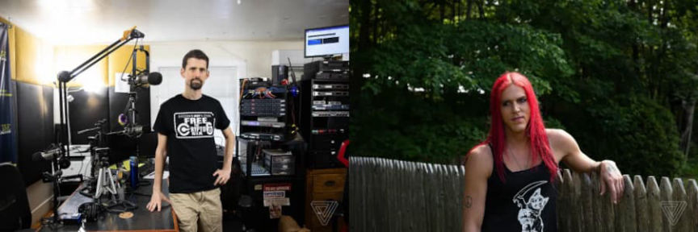
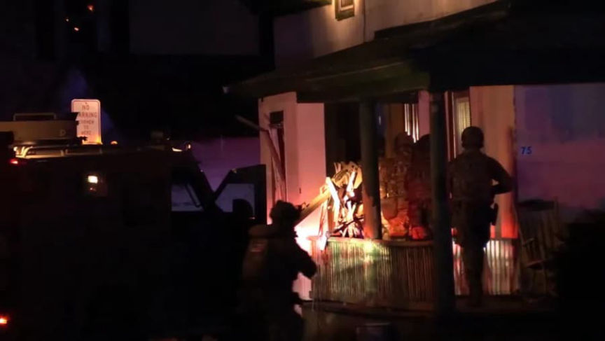
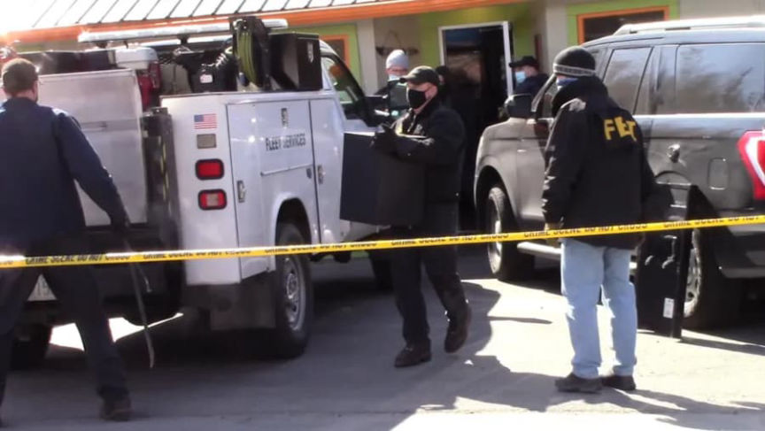
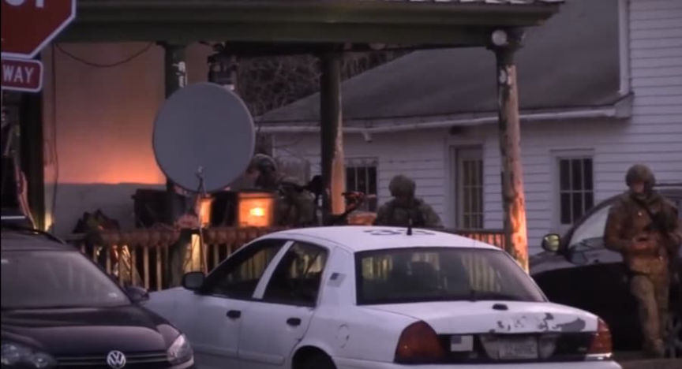
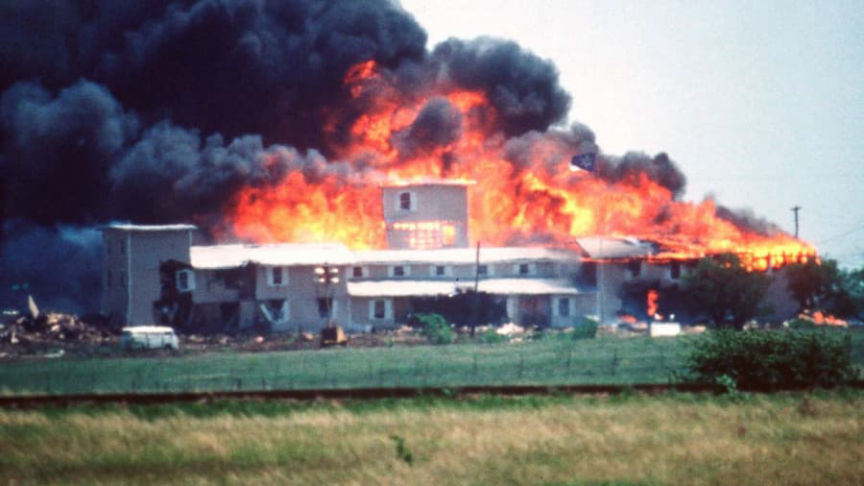
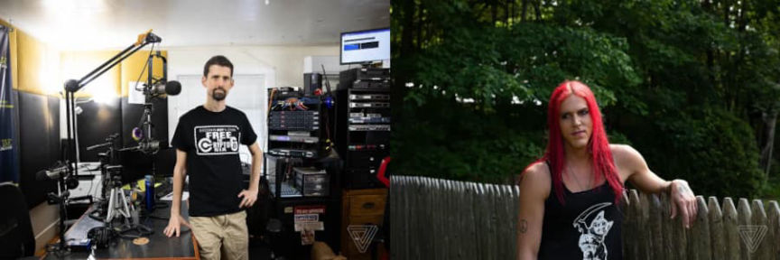
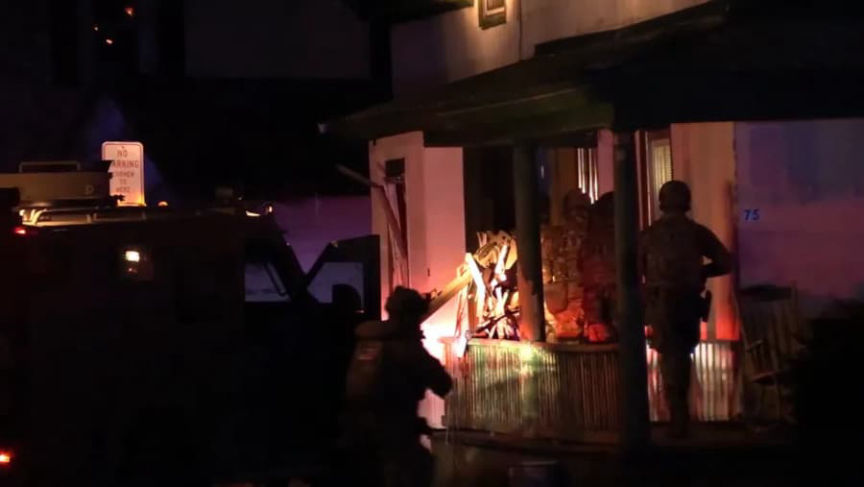
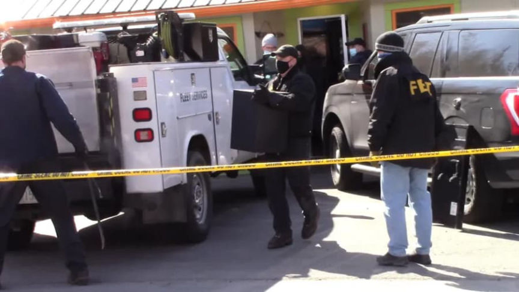
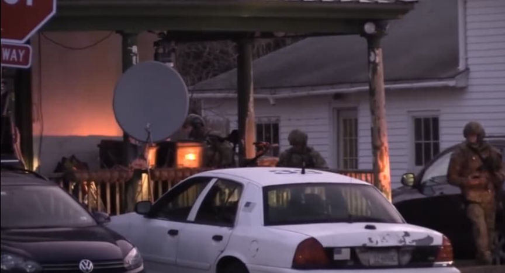
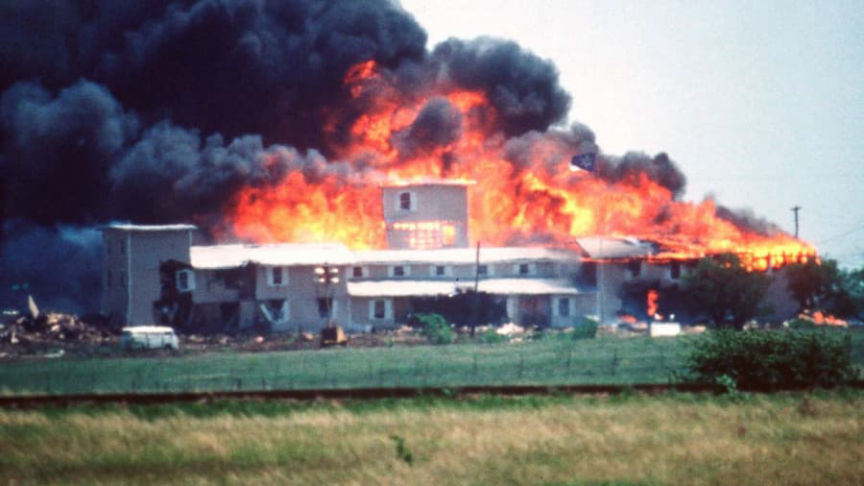

Two Charged for Operating a Cryptocurrency Exchange Business
A federal grand jury returned a 33-count superseding indictment charging two cryptocurrency exchange operators with money laundering and other financial crimes.
In March 2021, a grand jury returned a 20-count indictment charging Ian Freeman, Colleen Fordham, Renee Spinella, Andrew Spinella, “Nobody” (formerly Richard Paul), and Aria DiMezzo with an assortment of financial crimes related to the operation of a “virtual currency exchange business in violation of federal anti-money laundering laws and regulations, including those requiring money transmitting businesses to meet registration and reporting requirements.”

People who have been following cryptocurrencies for a while are probably familiar with Ian Freeman for his activism in the cryptocurrency world and his radio show, Free Talk Live. Freeman is enthusiastic about the same things as Ulbricht (big tent libertarianism). Feds raided him with two BearCat G3s. They also broke a window at his house and flew a drone inside to explore before entering. I think the state violated your NAP. A libertarian nightmare.

Three co-defendants, Nobody F/K/A Richard Paul and Andrew and Renee Spinella have entered guilty pleas. The government moved to dismiss with prejudice the case against Fordham.
The indictment accuses the conspirators of advertising cryptocurrency for sale online through websites including LocalBitcoins.com and operating cryptocurrency ATMs or kiosks. As a part of the conspiracy, Freeman and DiMezzo opened bank accounts in the names of religious entities, including the Shire Free Church, the Crypto Church of N.H., the Church of the Invisible Hand, and the Reformed Satanic Church.
The co-conspirators evaded detection of their so-called “unlawful virtual currency exchange scheme” by misleading banks about the nature of their business. In some cases, the defendants allegedly tricked banks into believing that their cryptocurrency exchange business was a religious organization receiving charitable contributions. Additionally, the defendants would instruct their customers to lie about their cryptocurrency transactions. In some instances, they instructed customers to tell their banks that payments to the defendants were church donations.

Between May 25, 2016, and March 15, 2021, the defendants exchanged more than $10,000,000 in cryptocurrency for customers throughout the United States.
The superseding indictment charges Freeman and DiMezzo with conspiracy to operate an unlicensed money transmitting business. Freeman also faces the following charges:
operating an unlicensed money transmitting business; conspiracy to commit wire and bank fraud; twelve counts of wire fraud; four counts of money laundering; conspiracy to commit money laundering; four counts of attempting to evade taxes; and operating a financial crimes enterprise. DiMezzo has also been charged with operating an unlicensed money transmitting business, four counts of wire fraud, and three counts of money laundering.

Freeman allegedly knowingly processed and profited from transactions conducted by fraudsters and scammers, including so-called “romance scams.” “By knowingly permitting defrauded individuals to exchange fiat currency for virtual currency including Bitcoin, FREEMAN and others facilitated the transfer of illicit proceeds to the executors of the illegal scams, while generating revenue for the virtual currency exchange business.”
If convicted, Freeman and DiMezzo must forfeit an extensive portfolio’s worth of cryptocurrency, cash, and metals. For example, the list below contains the items taken from Freeman and ATMs operated by the defendants.
6.124429323 BTC seized from Ian Freeman; 315.44728106 DASH, seized from Ian Freeman; $14,120.00 U.S. Currency seized from Bitcoin ATM, taken from Bitcoin Embassy; $30,980.00 U.S. Currency seized from Campus Convenience Bitcoin ATM; One physical ‘1 BTC’ Casascius Bitcoin seized from Ian Freeman’s safe; One physical ‘100 BTC’ Casascius Bitcoin “gold plated bearer bar” seized from Ian Freeman’s safe; .9999783 BCH from physical ‘1 BTC’ Casascius Bitcoin seized from Ian Freeman’s safe; .99909638 BTC from physical ‘1 BTC’ Casascius Bitcoin seized from Ian Freeman’s safe; 99.99993098 BCH from physical ‘100 BTC’ Casascius Bitcoin seized from Ian Freeman’s safe; 99.99765508 BTC from physical ‘100 BTC’ Casascius Bitcoin seized from Ian Freeman’s safe; Misc. coins and ingots of precious metal seized from Ian Freeman’s safe: OPM sealed 1oz gold bars .999 fine; PAMP sealed 1oz gold bar .999 fine; $1 Liberty dollar warehouse silver receipts 1/20 oz each; $5 Liberty dollar warehouse silver receipts 1/4 oz each; $10 Liberty dollar warehouse silver receipts 1/2 oz each; $20 Liberty dollar warehouse silver receipts; Silver coins 1/2 oz .999 fine; Silver coins 1 oz .999 fine; Silver coins 2 oz .999 fine; Silver coins in plastic cases 1 oz .999 fine; Silver bullet 1 oz .999 fine; Platinum Ron Paul coin 1 oz .999 fine, OPM sealed 1oz gold bars .999 fine; Australian 1 oz gold coin .999 fine; Australian 2 oz silver coin .999 fine; Swiss of American 100 oz silver bar .999 fine; and Copper coins; $179,672.00 U.S. Currency seized from Ian Freeman’s safe; 143 silver coins and one 10-oz silver bar seized from Ian Freeman’s residence; $2,124.00 U.S. Currency seized from Ian Freeman’s residence; $610.00 U.S. Currency seized from Red Apple Diner Bitcoin ATM; $6,680.00 U.S. Currency seized from Murphy’s Taproom Bitcoin ATM; $300.00 U.S. Currency seized from Red Arrow Diner Bitcoin ATM The government has been complaining about how difficult it is to track down all of Freeman’s assets without Freeman’s assistance. They opposed his pretrial release because he did not tell the probation officer about certain cryptocurrency wallets when asked about his bank accounts. Another issue the government had involved Freeman’s use of specific messaging applications and services.
“The evidence shows that the defendant used encrypted messaging apps like Telegram to communicate with the people to whom he was selling his bitcoin. These encrypted messaging apps make it impossible to keep tabs on what the defendant is doing and who he is communicating with without proper monitoring conditions in place.”
Two Keene Residents Charged In Superseding Indictment With Additional Charges Related to Virtual Currency Exchange Business archive.is, onion, justice.gov.
Superseding indictment (pdf)

In March 2021, a grand jury returned a 20-count indictment charging Ian Freeman, Colleen Fordham, Renee Spinella, Andrew Spinella, “Nobody” (formerly Richard Paul), and Aria DiMezzo with an assortment of financial crimes related to the operation of a “virtual currency exchange business in violation of federal anti-money laundering laws and regulations, including those requiring money transmitting businesses to meet registration and reporting requirements.”

Ian Freeman and Aria DiMezzo | The Verge
People who have been following cryptocurrencies for a while are probably familiar with Ian Freeman for his activism in the cryptocurrency world and his radio show, Free Talk Live. Freeman is enthusiastic about the same things as Ulbricht (big tent libertarianism). Feds raided him with two BearCat G3s. They also broke a window at his house and flew a drone inside to explore before entering. I think the state violated your NAP. A libertarian nightmare.

A demonstration of state power.
Three co-defendants, Nobody F/K/A Richard Paul and Andrew and Renee Spinella have entered guilty pleas. The government moved to dismiss with prejudice the case against Fordham.
The indictment accuses the conspirators of advertising cryptocurrency for sale online through websites including LocalBitcoins.com and operating cryptocurrency ATMs or kiosks. As a part of the conspiracy, Freeman and DiMezzo opened bank accounts in the names of religious entities, including the Shire Free Church, the Crypto Church of N.H., the Church of the Invisible Hand, and the Reformed Satanic Church.
The co-conspirators evaded detection of their so-called “unlawful virtual currency exchange scheme” by misleading banks about the nature of their business. In some cases, the defendants allegedly tricked banks into believing that their cryptocurrency exchange business was a religious organization receiving charitable contributions. Additionally, the defendants would instruct their customers to lie about their cryptocurrency transactions. In some instances, they instructed customers to tell their banks that payments to the defendants were church donations.

Feds raided the Bitcoin Embassy.
Between May 25, 2016, and March 15, 2021, the defendants exchanged more than $10,000,000 in cryptocurrency for customers throughout the United States.
The superseding indictment charges Freeman and DiMezzo with conspiracy to operate an unlicensed money transmitting business. Freeman also faces the following charges:

Feds pulled Bitcoin ATMs out of the floors of businesses.
Freeman allegedly knowingly processed and profited from transactions conducted by fraudsters and scammers, including so-called “romance scams.” “By knowingly permitting defrauded individuals to exchange fiat currency for virtual currency including Bitcoin, FREEMAN and others facilitated the transfer of illicit proceeds to the executors of the illegal scams, while generating revenue for the virtual currency exchange business.”
If convicted, Freeman and DiMezzo must forfeit an extensive portfolio’s worth of cryptocurrency, cash, and metals. For example, the list below contains the items taken from Freeman and ATMs operated by the defendants.
- [*] U.S. $0.10 silver dime sealed in plastic,
“The evidence shows that the defendant used encrypted messaging apps like Telegram to communicate with the people to whom he was selling his bitcoin. These encrypted messaging apps make it impossible to keep tabs on what the defendant is doing and who he is communicating with without proper monitoring conditions in place.”
Two Keene Residents Charged In Superseding Indictment With Additional Charges Related to Virtual Currency Exchange Business archive.is, onion, justice.gov.
Superseding indictment (pdf)

Perhaps Freeman can be thankful the FBI’s Hostage Rescue Team was not involved?